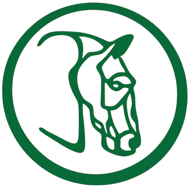

Jardines Club Hípico
Salón de eventos
·
Xochimilco
Sitio web
Conoce los espacios y cotiza
WhatsApp
Escríbenos al 55 2311 8153
Llamar
Llámanos al 55 2311 8153
Facebook
@JardinesClubHipico
Cómo llegar
Olivos 23, Sta. Inés, Xochimilco, 16810 CDMX
+30 años de experiencia
·
+500 eventos
·
8 espacios